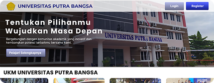

UX/UI Platform Manajemen UKM Terpadu
Platform ini dirancang untuk digitalisasi operasional UKM agar proses manajemen data, aktivitas organisasi, dan kolaborasi tim dapat berjalan lebih terarah.
Fokus utama desain adalah kemudahan penggunaan, penyajian informasi yang ringkas, serta akses cepat ke fitur-fitur yang digunakan pengurus setiap hari.
Technologies Used

Key Features
- Dashboard operasional terpadu untuk melihat aktivitas utama organisasi UKM.
- Pengelolaan data anggota, agenda, dan dokumentasi dengan alur kerja yang jelas.
- Komponen desain konsisten untuk mempercepat adaptasi pengguna baru.